June 15th, 2021#
Motivation: Using Mice object, apply agglomerative hierarchical clustering algorithm to fMRI data. This update is a precurser to the next one (skip this).
Show code cell source
# HIDE CODE
import os
import ants
import nrrd
import sys
import collections
import numpy as np
import pandas as pd
import nibabel as nib
import networkx as nx
import operator as op
from copy import deepcopy as dc
from os.path import join as pjoin
from tqdm.notebook import tqdm
import matplotlib.pyplot as plt
import seaborn as sns
sns.set_style('whitegrid')
# GitHub
git_path = pjoin(os.environ['HOME'], 'Dropbox/git/Ca-fMRI/')
sys.path.insert(0, git_path)
from utils.processing import *
from utils.network import *
from utils.plotting import *
from model.mouse import Mice
# Allen
allen_ws = pjoin(os.environ['HOME'], 'Documents/workspaces/allen')
allen_path = pjoin(allen_ws, 'MouseConnectivity')
os.makedirs(allen_path, exist_ok=True)
from allensdk.core.mouse_connectivity_cache import MouseConnectivityCache
from allensdk.api.queries.ontologies_api import OntologiesApi
# warnings
import warnings
warnings.filterwarnings('ignore', category=DeprecationWarning)
Show code cell source
# HIDE CODE
def trim_axs(axes, n):
axs = axes.flat
for ax in axs[n:]:
ax.remove()
return axs[:n]
def reset_ants_img(img: Union[np.ndarray, ants.ANTsImage], dtype=float, origin=0.0, spacing=1.0):
ndims = len(img.shape)
if isinstance(img, ants.ANTsImage):
img = img.numpy()
return ants.from_numpy(img.astype(dtype), origin=[origin]*ndims, spacing=[spacing]*ndims)
def add_children(graph: nx.DiGraph(), src_id: int, level: int, structure_tree):
src = structure_tree.get_structures_by_id([src_id])[0]
children = structure_tree.children([src_id])[0]
for child in children:
src_name = '\n'.join(src['name'].split(' '))
tgt_name = '\n'.join(child['name'].split(' '))
graph.add_node(tgt_name, lvl=level)
graph.add_edge(src_name, tgt_name)
return graph, children
def make_tree_graph(root: str, mcc: MouseConnectivityCache, n_levels: int = 3):
structure_tree = mcc.get_structure_tree()
structure = structure_tree.get_structures_by_name([root])[0]
g = nx.DiGraph()
g.add_node('\n'.join(structure['name'].split(' ')), lvl=0)
dend = {}
for lvl in range(n_levels):
if lvl == 0:
src_ids = [structure['id']]
else:
new_leaves = []
for i in src_ids:
g, children = add_children(
graph=g,
src_id=i,
level=lvl,
structure_tree=structure_tree,
)
for child in children:
new_leaves.append(child['id'])
src_ids = new_leaves
dend[lvl] = src_ids
return g, dend
def reorient_arr(x: np.ndarray, tr_axes: Tuple = (2, 1, 0)):
if len(x.shape) == 4:
tr_axes += (3,)
return np.transpose(x, tr_axes)[::-1]
def mask_left_right(mask: np.ndarray, left_right_axis: int = 2):
npix = mask.shape[left_right_axis]
coverage = int(np.ceil(npix/2))
slices_l = tuple(
slice(0, coverage) if i == left_right_axis else slice(mask.shape[i])
for i in range(len(mask.shape))
)
slices_r = tuple(
slice(npix-coverage, npix) if i == left_right_axis else slice(mask.shape[i])
for i in range(len(mask.shape))
)
mask_l = mask.copy().astype(bool)
mask_r = mask.copy().astype(bool)
mask_l[slices_r] = 0
mask_r[slices_l] = 0
return mask_l.astype(bool), mask_r.astype(bool)
from time import time
from sklearn.cluster import KMeans
import sklearnex
def kmeans_parcellation(
mask: np.ndarray,
num_regions: int = 256,
symmetrize: bool = False,
left_right_axis: int = 2,
random_state: int = 42, ):
sklearnex.patch_sklearn()
mask_l, mask_r = mask_left_right(mask, left_right_axis)
if symmetrize:
mask_r_full = mask_r.copy()
mask_l_full = mask_l.copy()
mask_r_full[slices_l] = np.flip(mask_r[slices_r], axis=left_right_axis)
mask_l_full[slices_r] = np.flip(mask_l[slices_l], axis=left_right_axis)
mask_sym = np.logical_and(mask_r_full, mask_l_full)
mask_l = mask_sym.copy().astype(bool)
mask_r = mask_sym.copy().astype(bool)
mask_l[slices_r] = 0
mask_r[slices_l] = 0
# do left
atlas_kmeans, cluster_centers = _do_kmeans(mask_l, num_regions, random_state)
# mirror symmetry clusters to right hemisphere
for region_id in np.unique(atlas_kmeans[atlas_kmeans > 0]):
region_id_r = region_id + num_regions
flipped = np.flip(atlas_kmeans[slices_l], axis=left_right_axis)
atlas_kmeans[slices_r][flipped == region_id] = region_id_r
# get center for right cluster
_ctr = cluster_centers[region_id].copy()
delta = npix/2 - _ctr[left_right_axis]
_ctr[left_right_axis] += 2*delta - 1
cluster_centers[region_id_r] = _ctr
else:
atlas_kmeans_l, cluster_centers_l = _do_kmeans(mask_l, num_regions, random_state)
atlas_kmeans_r, cluster_centers_r = _do_kmeans(mask_r, num_regions, random_state)
atlas_kmeans_r += num_regions
cluster_centers_r = {i+num_regions: ctr for i, ctr in cluster_centers_r.items()}
atlas_kmeans = atlas_kmeans_l.copy()
atlas_kmeans[mask_r] = atlas_kmeans_r[mask_r]
cluster_centers = {**cluster_centers_l, **cluster_centers_r}
sklearnex.unpatch_sklearn()
output = {
'atlas_kmeans': atlas_kmeans.astype(int),
'cluster_centers': cluster_centers,
'mask_l': mask_l.astype(bool),
'mask_r': mask_r.astype(bool),
}
return output
def _do_kmeans(x, num_regions, random_state):
nonzero_voxels = list(zip(*np.where(x.astype(bool))))
nonzero_voxels = np.reshape(nonzero_voxels, (-1, len(x.shape)))
nonzero_voxels = nonzero_voxels.astype(int)
kmeans = KMeans(
n_clusters=num_regions,
random_state=random_state,
).fit(nonzero_voxels.astype(float))
roi = kmeans.predict(nonzero_voxels.astype(float))
roi_unique = []
for lbl in roi:
if lbl not in roi_unique:
roi_unique.append(lbl)
mapping = {lbl: i+1 for i, lbl in enumerate(roi_unique)}
roi_relabeld = np.zeros_like(roi)
for lbl in roi_unique:
roi_relabeld[roi == lbl] = mapping[lbl]
atlas_kmeans_dict = defaultdict(list)
for voxel, lbl in zip(nonzero_voxels, roi_relabeld):
atlas_kmeans_dict[lbl].append(tuple(voxel))
atlas_kmeans_dict = dict(atlas_kmeans_dict)
atlas_kmeans = np.zeros(x.shape, dtype=int)
for region_id, voxel_list in atlas_kmeans_dict.items():
atlas_kmeans[tuple(zip(*voxel_list))] = region_id
cluster_centers = {mapping[lbl]: kmeans.cluster_centers_[lbl] for lbl in roi_unique}
return atlas_kmeans, cluster_centers
def translate_labels(labels: List[str], mcc: MouseConnectivityCache):
labels = list(labels) if not isinstance(labels, (list, tuple, dict)) else labels
structure_tree = mcc.get_structure_tree()
left_right = []
structure_ids = []
region_ids = []
for label in labels:
try:
lr, structure_id, region_id = tuple(map(lambda x: int(x), label.split('-')))
except ValueError:
lr, structure_id = tuple(map(lambda x: int(x), label.split('-')))
region_id = None
left_right.append('L' if lr == 0 else 'R')
structure_ids.append(structure_id)
region_ids.append(region_id)
structures = structure_tree.get_structures_by_id(structure_ids)
translated = [
'{:s}-{:s}'.format(lr, struct['name']) if region_id is None else
'{:s}-{:s}-{:d}'.format(lr, struct['name'], region_id)
for lr, struct, region_id in zip(left_right, structures, region_ids)
]
return translated
def load_allen(ws_dir: str, mode: str = 'MouseConnectivity', resolution: int = 100):
manifest_file = pjoin(ws_dir, mode, 'manifest.json')
mcc = MouseConnectivityCache(resolution=resolution, manifest_file=manifest_file)
structure_tree = mcc.get_structure_tree()
root = structure_tree.get_structures_by_name(['root'])[0]
cerebrum = structure_tree.get_structures_by_name(['Cerebrum'])[0]
isocortex = structure_tree.get_structures_by_name(['Isocortex'])[0]
template, template_info = mcc.get_template_volume()
annot, annot_info = mcc.get_annotation_volume()
root_mask, root_mask_info = mcc.get_structure_mask(root['id'])
cerebrum_mask, cerebrum_mask_info = mcc.get_structure_mask(cerebrum['id'])
isocortex_mask, isocortex_mask_info = mcc.get_structure_mask(isocortex['id'])
output = {
'manifest_file': manifest_file,
'mcc': mcc,
'structure_tree': structure_tree,
'root': root,
'cerebrum': cerebrum,
'isocortex': isocortex,
'template': template,
'template_info': template_info,
'annot': annot,
'annot_info': annot_info,
'root_mask': root_mask,
'root_mask_info': root_mask_info,
'cerebrum_mask': cerebrum_mask,
'cerebrum_mask_info': cerebrum_mask_info,
'isocortex_mask': isocortex_mask,
'isocortex_mask_info': isocortex_mask_info,
}
return output
def plot_parcellation(
parcellation: np.ndarray,
mask_l: np.ndarray,
mask_r: np.ndarray,
root_mask: np.ndarray,
figsize=(6, 4),
cmap='turbo', ):
sns.set_style('whitegrid')
fig, axes = plt.subplots(2, 3, figsize=figsize)
for i in range(2):
for j in range(3):
x = parcellation.copy()
if i == 0:
x[mask_r] = 0
label = 'left\n'
else:
x[mask_l] = 0
# x[x != 0] -= int(np.max(parcellation) // 2)
label = 'right\n'
if j == 0:
title = 'coronal'
elif j == 1:
title = 'axial'
else:
title = 'saggital'
data2plt = np.ma.masked_where(~root_mask.astype(bool), x)
axes[i, j].imshow(data2plt.mean(j), cmap=cmap)
list(map(lambda x: x.set_visible(False), axes[i, j].spines.values()))
axes[i, j].set_xticks([])
axes[i, j].set_yticks([])
if i == 0:
axes[i, j].set_title(title, fontsize=17, y=1.2)
else:
axes[i, j].set_title('')
if j == 0:
axes[i, j].set_ylabel(label, fontsize=17)
fig.tight_layout()
plt.show()
return fig, axes
def plot_registration(
fixed: np.ndarray,
moving: np.ndarray,
warped: np.ndarray,
figsize=(6, 8), ):
sns.set_style('white')
fig, axes = plt.subplots(3, 3, figsize=figsize)
for i in range(3):
for j in range(3):
if i == 0:
x = fixed.numpy()
label = 'fixed'
elif i == 1:
x = moving.numpy()
label = 'moving'
else:
x = warped.numpy()
label = 'warped'
if i == 0:
if j == 0:
top_title = 'axis = {:d}\n(coronal)'.format(j)
elif j == 1:
top_title = 'axis = {:d}\n(axial)'.format(j)
else:
top_title = 'axis = {:d}\n(saggital)'.format(j)
axes[i, j].set_title(top_title, y=1.1, fontsize=13)
if j == 0:
axes[i, j].set_ylabel(label + '\n', fontsize=13)
data2plt = x.mean(j)
axes[i, j].imshow(data2plt)
_ = list(map(lambda x: x.set_visible(False), axes[i, j].spines.values()))
axes[i, j].set_xticks([])
axes[i, j].set_yticks([])
msg = 'Plotting averaged data across different dimensions\n\n'
msg += '1st row (fixed): Average template, shape = {}\n'.format(fixed.shape)
msg += '2nd row (moving): Anatomical data, shape = {}\n'.format(moving.shape)
msg += '3rd row (warped): Anatomical data, shape = {}'.format(warped.shape)
plt.suptitle(msg, fontsize=14, y=1.02)
plt.tight_layout()
plt.show()
return fig, axes
import allensdk
print(allensdk.__version__)
2.11.2
Load Allen data#
allen = load_allen(allen_ws)
ROI definition (CCF space)#
num_regions = 64
parcellation = kmeans_parcellation(
mask=allen['isocortex_mask'],
num_regions=num_regions,
symmetrize=False,
left_right_axis=2,
)
Intel(R) oneAPI Data Analytics Library solvers for sklearn enabled: https://intelpython.github.io/daal4py/sklearn.html
dict_list = []
for radius in tqdm(np.linspace(1, 20, num=101)):
atlas_kmeans_eroded = np.zeros_like(parcellation['atlas_kmeans'])
accepted, rejected = 0, 0
for region_id, ctr in tqdm(parcellation['cluster_centers'].items(), leave=False):
for voxel in list(zip(*np.where(parcellation['atlas_kmeans'] == region_id))):
dist = np.linalg.norm(ctr - voxel)
if dist < radius:
atlas_kmeans_eroded[voxel] = region_id
accepted += 1
else:
rejected += 1
accepted /= parcellation['atlas_kmeans'].astype(bool).sum()
rejected /= parcellation['atlas_kmeans'].astype(bool).sum()
# find variation in ROI sizes
x = atlas_kmeans_eroded.copy().astype(float)
vals = []
for region_id in np.unique(x[x > 0]):
size = (x == region_id).sum() / allen['isocortex_mask'].sum()
if size >= 0.5:
print('bad', radius, region_id)
break
vals.append(size * 100)
# save data
data_dict = {
'radius': [radius],
'accepted': [accepted * 100],
'rejected': [rejected * 100],
'size_min': [np.min(vals)],
'size_max': [np.max(vals)],
'size_mean': [np.mean(vals)],
'size_var': [np.var(vals)],
}
dict_list.append(data_dict)
df = pd.DataFrame(merge_dicts(dict_list))
idx = (df.accepted - df.rejected).abs().values.argmin()
idx
21
sns.lineplot(data=df, x='radius', y='accepted', color='C2', label='accepted', lw=3)
sns.lineplot(data=df, x='radius', y='rejected', color='C3', label='rejected', lw=3)
plt.axvline(df.loc[idx, 'radius'], color='k', ls='--')
<matplotlib.lines.Line2D at 0x7f577057f970>
sns.lineplot(data=df, x='radius', y='size_var', label='variance of ROI sizes', lw=3, color='C0')
plt.axvline(df.loc[idx, 'radius'], color='k', ls='--')
<matplotlib.lines.Line2D at 0x7f5793a7f3d0>
selected_df = df.loc[df.radius < 15.]
sns.lineplot(data=selected_df, x='radius', y='size_var', label='variance of ROI sizes', lw=3, color='C0')
plt.axvline(df.loc[idx, 'radius'], color='k', ls='--')
<matplotlib.lines.Line2D at 0x7f5793a714c0>
radius = df.loc[idx, 'radius']
radius
4.99
radius = 5
radius
5
atlas_kmeans_eroded = np.zeros_like(parcellation['atlas_kmeans'])
accepted = 0
rejected = 0
for region_id, ctr in tqdm(parcellation['cluster_centers'].items(), leave=False):
for voxel in list(zip(*np.where(parcellation['atlas_kmeans'] == region_id))):
dist = np.linalg.norm(ctr - voxel)
if dist < radius:
atlas_kmeans_eroded[voxel] = region_id
accepted += 1
else:
rejected += 1
accepted /= parcellation['atlas_kmeans'].astype(bool).sum()
rejected /= parcellation['atlas_kmeans'].astype(bool).sum()
accepted *= 100
rejected *= 100
accepted, rejected
(52.5327599496937, 47.4672400503063)
x = atlas_kmeans_eroded.copy().astype(float)
vals, percentages = [], []
for region_id in np.unique(x[x > 0]):
vals.append((x == region_id).sum())
size = (x == region_id).sum() / allen['isocortex_mask'].sum()
if size >= 0.5:
print('bad', region_id)
break
percentages.append(size * 100)
sns.histplot(percentages, kde=True);
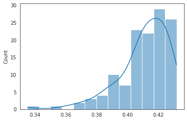
np.min(percentages), np.max(percentages), np.var(percentages)
(0.33510487240861697, 0.43166051361109986, 0.0002736681559132824)
np.min(vals), np.max(vals), np.var(vals)
(413, 532, 415.68359375)
Define ROIs#
selected_names = [
'Striatum',
'Pallidum',
'Olfactory areas',
'Cortical subplate',
'Hippocampal formation',
'Isocortex',
]
selected_names
['Striatum',
'Pallidum',
'Olfactory areas',
'Cortical subplate',
'Hippocampal formation',
'Isocortex']
root_mask_l, root_mask_r = mask_left_right(allen['root_mask'])
selected_structures = allen['structure_tree'].get_structures_by_name(selected_names)
roi_masks = {}
for structure_dict in selected_structures:
print('id: {:d},\tname: {:s}'.format(structure_dict['id'], structure_dict['name']))
if structure_dict['name'] == 'Isocortex':
for region_id_l in range(1, num_regions+1):
region_id_r = region_id_l + num_regions
_mask_l = atlas_kmeans_eroded == region_id_l
_mask_r = atlas_kmeans_eroded == region_id_r
roi_masks['0-{:d}-{:d}'.format(structure_dict['id'], region_id_l)] = _mask_l.astype(bool)
roi_masks['1-{:d}-{:d}'.format(structure_dict['id'], region_id_r)] = _mask_r.astype(bool)
else:
_mask = allen['mcc'].get_structure_mask(structure_dict['id'])[0]
_mask_l = np.logical_and(_mask, root_mask_l)
_mask_r = np.logical_and(_mask, root_mask_r)
roi_masks['0-{:d}'.format(structure_dict['id'])] = _mask_l.astype(bool)
roi_masks['1-{:d}'.format(structure_dict['id'])] = _mask_r.astype(bool)
id: 477, name: Striatum
id: 803, name: Pallidum
id: 698, name: Olfactory areas
id: 703, name: Cortical subplate
id: 1089, name: Hippocampal formation
id: 315, name: Isocortex
roi_masks.keys()
dict_keys(['0-477', '1-477', '0-803', '1-803', '0-698', '1-698', '0-703', '1-703', '0-1089', '1-1089', '0-315-1', '1-315-65', '0-315-2', '1-315-66', '0-315-3', '1-315-67', '0-315-4', '1-315-68', '0-315-5', '1-315-69', '0-315-6', '1-315-70', '0-315-7', '1-315-71', '0-315-8', '1-315-72', '0-315-9', '1-315-73', '0-315-10', '1-315-74', '0-315-11', '1-315-75', '0-315-12', '1-315-76', '0-315-13', '1-315-77', '0-315-14', '1-315-78', '0-315-15', '1-315-79', '0-315-16', '1-315-80', '0-315-17', '1-315-81', '0-315-18', '1-315-82', '0-315-19', '1-315-83', '0-315-20', '1-315-84', '0-315-21', '1-315-85', '0-315-22', '1-315-86', '0-315-23', '1-315-87', '0-315-24', '1-315-88', '0-315-25', '1-315-89', '0-315-26', '1-315-90', '0-315-27', '1-315-91', '0-315-28', '1-315-92', '0-315-29', '1-315-93', '0-315-30', '1-315-94', '0-315-31', '1-315-95', '0-315-32', '1-315-96', '0-315-33', '1-315-97', '0-315-34', '1-315-98', '0-315-35', '1-315-99', '0-315-36', '1-315-100', '0-315-37', '1-315-101', '0-315-38', '1-315-102', '0-315-39', '1-315-103', '0-315-40', '1-315-104', '0-315-41', '1-315-105', '0-315-42', '1-315-106', '0-315-43', '1-315-107', '0-315-44', '1-315-108', '0-315-45', '1-315-109', '0-315-46', '1-315-110', '0-315-47', '1-315-111', '0-315-48', '1-315-112', '0-315-49', '1-315-113', '0-315-50', '1-315-114', '0-315-51', '1-315-115', '0-315-52', '1-315-116', '0-315-53', '1-315-117', '0-315-54', '1-315-118', '0-315-55', '1-315-119', '0-315-56', '1-315-120', '0-315-57', '1-315-121', '0-315-58', '1-315-122', '0-315-59', '1-315-123', '0-315-60', '1-315-124', '0-315-61', '1-315-125', '0-315-62', '1-315-126', '0-315-63', '1-315-127', '0-315-64', '1-315-128'])
len(roi_masks)
138
FC analysis#
Load anat#
fixed = reset_ants_img(allen['template'])
mice = Mice()
config = Config()
n_seeds = 5
seeds = [2**i for i in range(n_seeds)]
moving_imgs = {}
warped_imgs = {}
transforms = {}
for key, anat in tqdm(mice.T1w.items()):
subject, session, _ = mice.looper[key]
if subject not in [6, 7]:
continue
moving = anat.get_data()
moving = reorient_arr(moving)
moving = reset_ants_img(moving)
moving_imgs[key] = moving
_txs = []
_perf = []
for seed in seeds:
tx = ants.registration(
fixed=fixed,
moving=moving,
mask=moving.get_mask(),
type_of_transform='SyN',
verbose=True,
random_seed=seed,
)
warped = ants.apply_transforms(
fixed=fixed,
moving=moving,
transformlist=tx['fwdtransforms'],
interpolator='linear',
)
mi = ants.image_mutual_information(fixed, warped)
mi_base = ants.image_mutual_information(fixed, fixed)
_txs.append(tx)
_perf.append(mi/mi_base)
best_tx = _txs[np.argmax(_perf)]
transforms[key] = best_tx
warped = ants.apply_transforms(
fixed=fixed,
moving=moving,
transformlist=best_tx['fwdtransforms'],
interpolator='linear',
)
warped_imgs[key] = warped
mi = ants.image_mutual_information(fixed, warped)
mi_base = ants.image_mutual_information(fixed, fixed)
print('{:s},\tbest rel mi: {:.3f}'.format(key, mi/mi_base))
sub-SLC06_ses-1, best rel mi: 0.449
sub-SLC06_ses-2, best rel mi: 0.429
sub-SLC06_ses-3, best rel mi: 0.447
sub-SLC07_ses-1, best rel mi: 0.434
sub-SLC07_ses-2, best rel mi: 0.451
sub-SLC07_ses-3, best rel mi: 0.433
Inv mask transforms#
masks_inv = {}
for key, best_tx in transforms.items():
inv = {}
inv['roi'] = {
lbl: ants.apply_transforms(
fixed=moving,
moving=reset_ants_img(mask),
transformlist=best_tx['invtransforms'],
interpolator='genericLabel', )
for lbl, mask in roi_masks.items()
}
_masks = [
parcellation['mask_l'],
parcellation['mask_r'],
allen['root_mask'],
allen['cerebrum_mask'],
allen['isocortex_mask'],
]
left_inv, right_inv, root_inv, cerebrum_inv, isocortex_inv = [
ants.apply_transforms(
fixed=moving,
moving=reset_ants_img(mask),
transformlist=best_tx['invtransforms'],
interpolator='genericLabel', )
for mask in _masks
]
inv['left'] = left_inv
inv['right'] = right_inv
inv['root'] = root_inv
inv['cerebrum'] = cerebrum_inv
inv['isocortex'] = isocortex_inv
masks_inv[key] = inv
atlas_inv = {}
for key, val in masks_inv.items():
atlas_kmeans_inv = np.zeros(moving.shape)
for lbl, mask_inv in val['roi'].items():
if str(allen['isocortex']['id']) not in lbl:
continue
region_id = int(lbl.split('-')[-1])
atlas_kmeans_inv[mask_inv.numpy().astype(bool)] = region_id
atlas_inv[key] = atlas_kmeans_inv
for key, atlas_kmeans_inv in atlas_inv.items():
_ = plot_parcellation(
parcellation=atlas_kmeans_inv,
mask_l=masks_inv[key]['left'].numpy().astype(bool),
mask_r=masks_inv[key]['right'].numpy().astype(bool),
root_mask=masks_inv[key]['root'].numpy().astype(bool),
figsize=(4, 3),
)
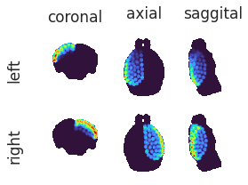
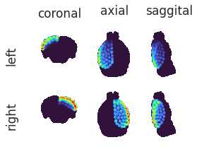
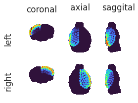
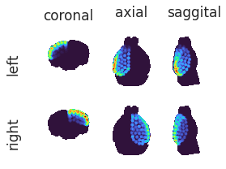
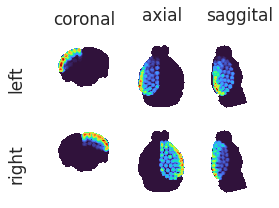
Load func#
config = Config()
include_intvl = range(config.exclude, config.run_duration)
normal = True
dict_list = []
for key, bold in tqdm(mice.bold.items()):
subject, session, run = mice.looper[key]
if subject not in [6, 7]:
continue
x = bold.get_data()
if bold.task != 'rest' or x is None:
continue
x = reorient_arr(x)
key_mask = mice.get_key(subject, session)
mask_CH = masks_inv[key_mask]['cerebrum'].numpy().astype(bool)
if normal:
mean = x[mask_CH, :].mean()
sd = x[mask_CH, :].std()
x = (x - mean) / sd
# put into df
for region_id, mask in masks_inv[key_mask]['roi'].items():
data_dict = {
'bold': x[mask.numpy().astype(bool), :].mean(0)[include_intvl], # TODO: how about median?
'timepoint': range(config.run_duration*(run-1) + config.exclude, config.run_duration*run),
'region_id': [region_id] * len(include_intvl),
'subject': [subject] * len(include_intvl),
'session': [session] * len(include_intvl),
'run': [run] * len(include_intvl),
'normal': [str(normal)] * len(include_intvl),
}
dict_list.append(data_dict)
df = pd.DataFrame(merge_dicts(dict_list))
df.shape
(1821600, 7)
df_table = {}
for key, (subject, session, run) in mice.looper.items():
selected_df = df.loc[
(df.subject == subject) &
(df.session == session) &
(df.run == run)
]
if len(selected_df):
df_table[key] = selected_df.pivot(index='timepoint', columns='region_id', values='bold')
node_labels = list(df_table.values())[0].columns.values.tolist()
node_labels = {i: lbl for i, lbl in enumerate(node_labels)}
Subject 6, session 1, runs [1, 3, 5, 7]#
df_list = [
_df for key, _df in df_table.items()
if mice.looper[key][0] in [6] and mice.looper[key][1] in [1]
]
df_combined = pd.concat(df_list)
df_combined.shape
(2200, 138)
import warnings
warnings.filterwarnings('ignore', category=DeprecationWarning)
percentiles = [30, 25, 20, 18, 15, 10]
corrs = get_corrs(df_combined, percentiles=percentiles, positive_only=False)
corrs.keys()
dict_keys(['percentiles', 'pearson_thresholds', 'spearman_thresholds', 'pearson', 'spearman', 'pearson_corr', 'spearman_corr'])
plt.imshow(corrs['pearson_corr'], cmap='nipy_spectral', vmin=0, vmax=1)
<matplotlib.image.AxesImage at 0x7e76a85a4dc0>
plt.figure(figsize=(8, 6))
plt.imshow(corrs['pearson_corr'], cmap='bwr', vmin=-1, vmax=1)
<matplotlib.image.AxesImage at 0x7e78444e7430>
_ = plot_corrs(corrs['pearson'], corrs['spearman'])
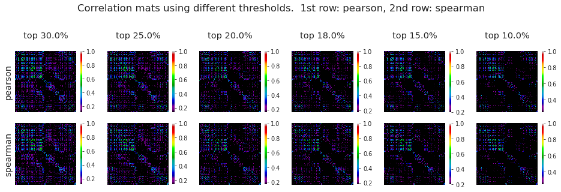
_ = plot_corr_hist(
corr_list=[corrs['pearson_corr'], corrs['spearman_corr']],
labels=['pearson', 'spearman'],
colors=['C0', 'C3'],
positive_only=False,
figsize=(8, 5),
)
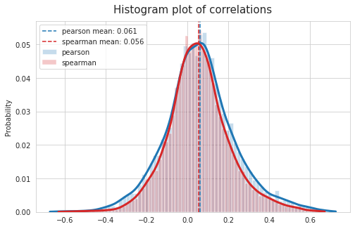
_ = plot_corr_hist(
corr_list=[corrs['pearson_corr'], corrs['spearman_corr']],
labels=['pearson', 'spearman'],
colors=['C0', 'C3'],
positive_only=True,
figsize=(8, 5),
)
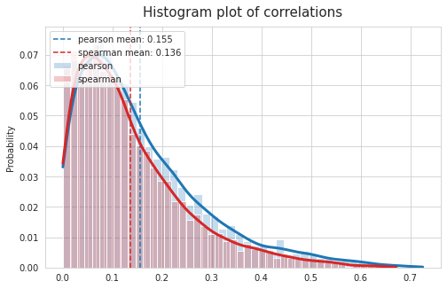
Hierarchical clustering#
from scipy.spatial.distance import pdist
from scipy.cluster import hierarchy as sp_hier
x_dict = {
k: np.array(list(v.values())).reshape(1, -1)
for k, v in df_combined.reset_index(drop=True).to_dict().items()
}
x = np.concatenate(list(x_dict.values()))
y = pdist(X=x, metric='correlation')
z = sp_hier.linkage(y, method='ward', metric='euclidean', optimal_ordering=False)
x.shape, y.shape, z.shape
((138, 2200), (9453,), (137, 4))
fig, ax = plt.subplots(1, 1, figsize=(13.5 * 3, 4))
dn = sp_hier.dendrogram(
Z=z,
p=30,
truncate_mode=None,
color_threshold=None,
get_leaves=True,
orientation='top',
labels=translate_labels(x_dict, allen['mcc']),
count_sort=False,
distance_sort=False,
show_leaf_counts=True,
no_plot=False,
no_labels=False,
leaf_font_size=14,
leaf_rotation=-90,
leaf_label_func=None,
show_contracted=False,
link_color_func=None,
ax=ax,
above_threshold_color='C0',
)
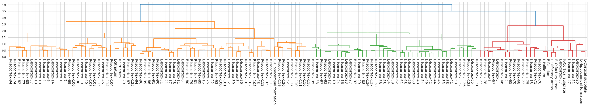
partition = {node: color for node, color in zip(dn['leaves'], dn['leaves_color_list'])}
color2idx = {c: i+1 for i, c in enumerate(set(partition.values()))}
partition = {node: color2idx[c] for node, c in partition.items()}
partition = dict(sorted(partition.items()))
partition = {node_labels[node]: comm_idx for node, comm_idx in partition.items()}
comms3d = np.zeros(fixed.shape)
for label, comm_idx in partition.items():
if str(allen['isocortex']['id']) in label:
lr, structure_id, region_id = tuple(map(lambda x: int(x), label.split('-')))
comms3d[parcellation['atlas_kmeans'] == region_id] = comm_idx
else:
comms3d[roi_masks[label]] = comm_idx
x = comms3d.copy()
x[~allen['cerebrum_mask'].astype(bool)] = np.nan
for axis in range(3):
fixed.plot(
overlay=ants.from_numpy(x),
overlay_cmap='RdYlBu_r',
overlay_alpha=0.9,
nslices=9,
figsize=1,
axis=axis,
)
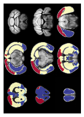
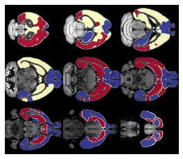
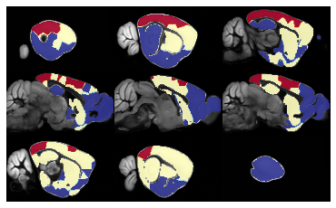
x = comms3d.copy()
x[~allen['isocortex_mask'].astype(bool)] = np.nan
for axis in range(3):
fixed.plot(
overlay=ants.from_numpy(x),
overlay_cmap='RdYlBu_r',
overlay_alpha=0.9,
nslices=36,
figsize=1,
axis=axis,
)
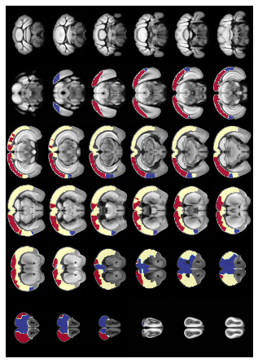
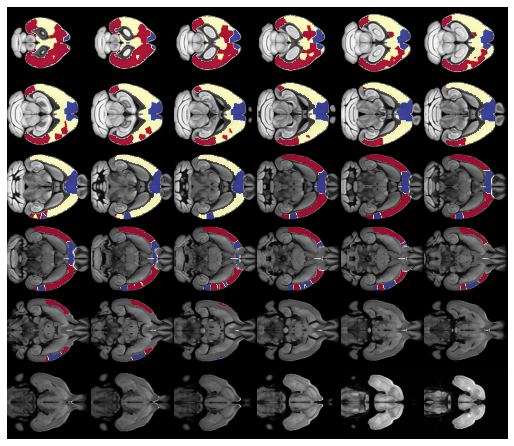
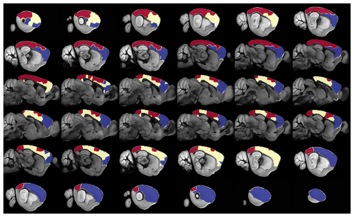
comms3d.shape
(132, 80, 114)
np.save('comms3d_{:d}.npy'.format(num_regions), comms3d)
Subject 6, sessions [1, 2, 3], runs [1, 3, 5, 7]#
df_list = [
_df for key, _df in df_table.items()
if mice.looper[key][0] in [6] and mice.looper[key][1] in [1, 2, 3]
]
df_combined = pd.concat(df_list)
df_combined.shape
(6600, 138)
import warnings
warnings.filterwarnings('ignore', category=DeprecationWarning)
percentiles = [30, 25, 20, 18, 15, 10]
corrs = get_corrs(df_combined, percentiles=percentiles, positive_only=False)
corrs.keys()
dict_keys(['percentiles', 'pearson_thresholds', 'spearman_thresholds', 'pearson', 'spearman', 'pearson_corr', 'spearman_corr'])
plt.imshow(corrs['pearson_corr'], cmap='nipy_spectral', vmin=0, vmax=1)
<matplotlib.image.AxesImage at 0x7e77f40f0f40>
plt.figure(figsize=(8, 6))
plt.imshow(corrs['pearson_corr'], cmap='bwr', vmin=-1, vmax=1)
<matplotlib.image.AxesImage at 0x7e786c3c4eb0>
_ = plot_corrs(corrs['pearson'], corrs['spearman'])
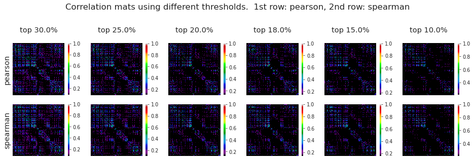
_ = plot_corr_hist(
corr_list=[corrs['pearson_corr'], corrs['spearman_corr']],
labels=['pearson', 'spearman'],
colors=['C0', 'C3'],
positive_only=False,
figsize=(8, 5),
)
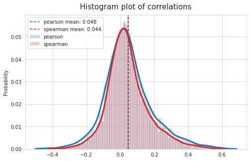
_ = plot_corr_hist(
corr_list=[corrs['pearson_corr'], corrs['spearman_corr']],
labels=['pearson', 'spearman'],
colors=['C0', 'C3'],
positive_only=True,
figsize=(8, 5),
)
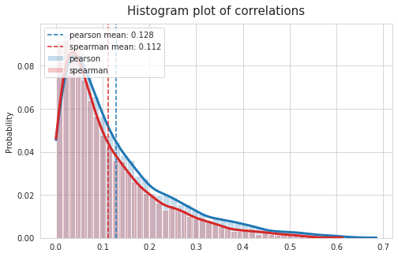
Hierarchical clustering#
x_dict = {
k: np.array(list(v.values())).reshape(1, -1)
for k, v in df_combined.reset_index(drop=True).to_dict().items()
}
x = np.concatenate(list(x_dict.values()))
y = pdist(X=x, metric='correlation')
z = sp_hier.linkage(y, method='ward', metric='euclidean', optimal_ordering=False)
x.shape, y.shape, z.shape
((138, 6600), (9453,), (137, 4))
fig, ax = plt.subplots(1, 1, figsize=(13.5 * 3, 5))
dn = sp_hier.dendrogram(
Z=z,
p=30,
truncate_mode=None,
color_threshold=None,
get_leaves=True,
orientation='top',
labels=translate_labels(x_dict, allen['mcc']),
count_sort=False,
distance_sort=False,
show_leaf_counts=True,
no_plot=False,
no_labels=False,
leaf_font_size=14,
leaf_rotation=-90,
leaf_label_func=None,
show_contracted=False,
link_color_func=None,
ax=ax,
above_threshold_color='C0',
)
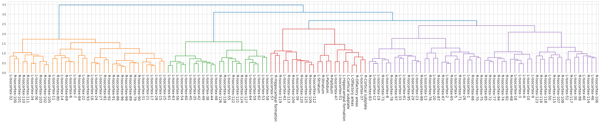
partition = {node: color for node, color in zip(dn['leaves'], dn['leaves_color_list'])}
color2idx = {c: i+1 for i, c in enumerate(set(partition.values()))}
partition = {node: color2idx[c] for node, c in partition.items()}
partition = dict(sorted(partition.items()))
partition = {node_labels[node]: comm_idx for node, comm_idx in partition.items()}
comms3d = np.zeros(fixed.shape)
for label, comm_idx in partition.items():
if str(allen['isocortex']['id']) in label:
lr, structure_id, region_id = tuple(map(lambda x: int(x), label.split('-')))
comms3d[parcellation['atlas_kmeans'] == region_id] = comm_idx
else:
comms3d[roi_masks[label]] = comm_idx
x = comms3d.copy()
x[~allen['cerebrum_mask'].astype(bool)] = np.nan
for axis in range(3):
fixed.plot(
overlay=ants.from_numpy(x),
overlay_cmap='RdYlBu_r',
overlay_alpha=0.9,
nslices=9,
figsize=1,
axis=axis,
)
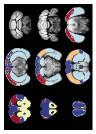
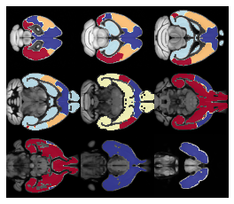
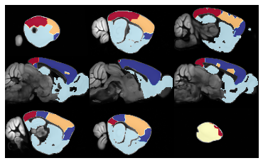
x = comms3d.copy()
x[~allen['isocortex_mask'].astype(bool)] = np.nan
for axis in range(3):
fixed.plot(
overlay=ants.from_numpy(x),
overlay_cmap='RdYlBu_r',
overlay_alpha=0.9,
nslices=36,
figsize=1,
axis=axis,
)
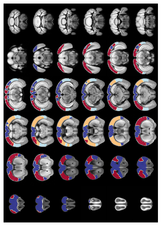
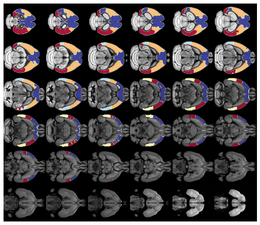
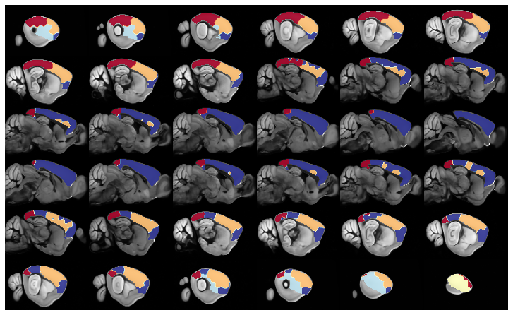
np.save('comms3d_{:d}_2.npy'.format(num_regions), comms3d)
Subjects 6 & 7, all sessions and runs#
df_list = [
_df for key, _df in df_table.items()
if mice.looper[key][0] in [6, 7] and mice.looper[key][1] in [1, 2, 3]
]
df_combined = pd.concat(df_list)
df_combined.shape
(13200, 138)
import warnings
warnings.filterwarnings('ignore', category=DeprecationWarning)
percentiles = [30, 25, 20, 18, 15, 10]
corrs = get_corrs(df_combined, percentiles=percentiles, positive_only=False)
corrs.keys()
dict_keys(['percentiles', 'pearson_thresholds', 'spearman_thresholds', 'pearson', 'spearman', 'pearson_corr', 'spearman_corr'])
plt.imshow(corrs['pearson_corr'], cmap='nipy_spectral', vmin=0, vmax=1)
<matplotlib.image.AxesImage at 0x7e78444a36a0>
plt.figure(figsize=(8, 6))
plt.imshow(corrs['pearson_corr'], cmap='bwr', vmin=-1, vmax=1)
<matplotlib.image.AxesImage at 0x7e786c3d3820>
_ = plot_corrs(corrs['pearson'], corrs['spearman'])
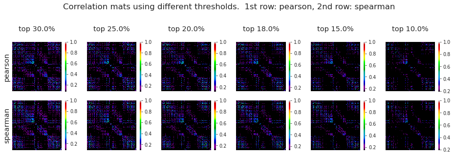
_ = plot_corr_hist(
corr_list=[corrs['pearson_corr'], corrs['spearman_corr']],
labels=['pearson', 'spearman'],
colors=['C0', 'C3'],
positive_only=False,
figsize=(8, 5),
)
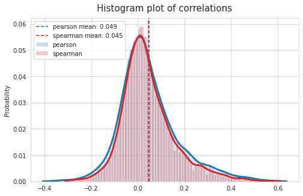
_ = plot_corr_hist(
corr_list=[corrs['pearson_corr'], corrs['spearman_corr']],
labels=['pearson', 'spearman'],
colors=['C0', 'C3'],
positive_only=True,
figsize=(8, 5),
)
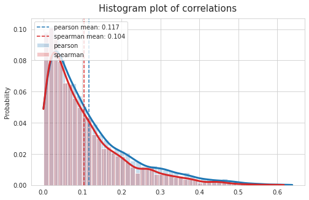
Hierarchical clustering#
x_dict = {
k: np.array(list(v.values())).reshape(1, -1)
for k, v in df_combined.reset_index(drop=True).to_dict().items()
}
x = np.concatenate(list(x_dict.values()))
y = pdist(X=x, metric='correlation')
z = sp_hier.linkage(y, method='ward', metric='euclidean', optimal_ordering=False)
x.shape, y.shape, z.shape
((138, 13200), (9453,), (137, 4))
fig, ax = plt.subplots(1, 1, figsize=(13.5 * 3, 5))
dn = sp_hier.dendrogram(
Z=z,
p=30,
truncate_mode=None,
color_threshold=None,
get_leaves=True,
orientation='top',
labels=translate_labels(x_dict, allen['mcc']),
count_sort=False,
distance_sort=False,
show_leaf_counts=True,
no_plot=False,
no_labels=False,
leaf_font_size=14,
leaf_rotation=-90,
leaf_label_func=None,
show_contracted=False,
link_color_func=None,
ax=ax,
above_threshold_color='C0',
)
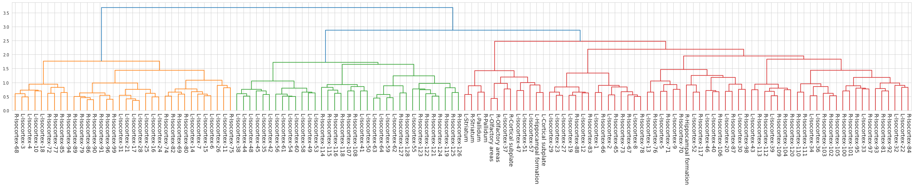
partition = {node: color for node, color in zip(dn['leaves'], dn['leaves_color_list'])}
color2idx = {c: i+1 for i, c in enumerate(set(partition.values()))}
partition = {node: color2idx[c] for node, c in partition.items()}
partition = dict(sorted(partition.items()))
partition = {node_labels[node]: comm_idx for node, comm_idx in partition.items()}
comms3d = np.zeros(fixed.shape)
for label, comm_idx in partition.items():
if str(allen['isocortex']['id']) in label:
lr, structure_id, region_id = tuple(map(lambda x: int(x), label.split('-')))
comms3d[parcellation['atlas_kmeans'] == region_id] = comm_idx
else:
comms3d[roi_masks[label]] = comm_idx
x = comms3d.copy()
x[~allen['cerebrum_mask'].astype(bool)] = np.nan
for axis in range(3):
fixed.plot(
overlay=ants.from_numpy(x),
overlay_cmap='RdYlBu_r',
overlay_alpha=0.9,
nslices=9,
figsize=1,
axis=axis,
)
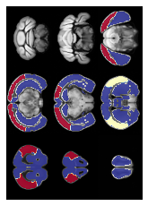
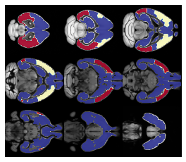
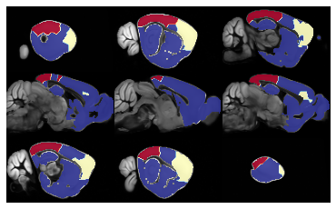
x = comms3d.copy()
x[~allen['isocortex_mask'].astype(bool)] = np.nan
for axis in range(3):
fixed.plot(
overlay=ants.from_numpy(x),
overlay_cmap='RdYlBu_r',
overlay_alpha=0.9,
nslices=36,
figsize=1,
axis=axis,
)
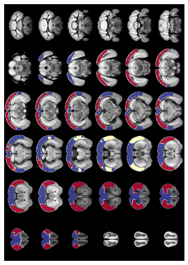
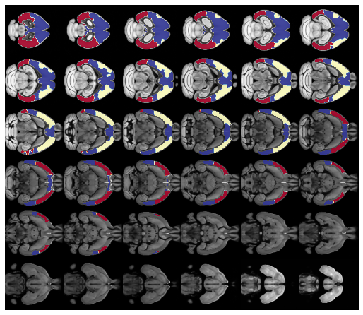
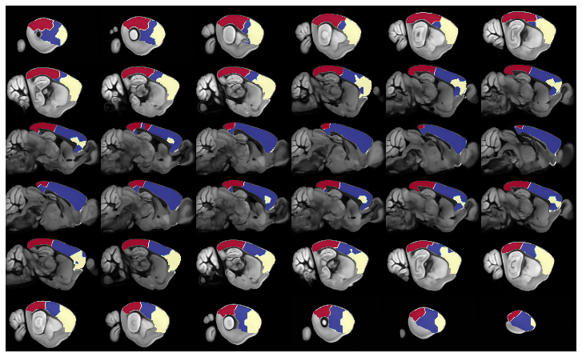
np.save('comms3d_{:d}_3.npy'.format(num_regions), comms3d)
All data from all mice, all sessions#
fixed = reset_ants_img(allen['template'])
mice = Mice()
config = Config()
n_seeds = 5
seeds = [2**i for i in range(n_seeds)]
moving_imgs = {}
warped_imgs = {}
transforms = {}
for key, anat in tqdm(mice.T1w.items()):
subject, session, _ = mice.looper[key]
moving = anat.get_data()
moving = reorient_arr(moving)
moving = reset_ants_img(moving)
moving_imgs[key] = moving
_txs = []
_perf = []
for seed in seeds:
tx = ants.registration(
fixed=fixed,
moving=moving,
mask=moving.get_mask(),
type_of_transform='SyN',
verbose=True,
random_seed=seed,
)
warped = ants.apply_transforms(
fixed=fixed,
moving=moving,
transformlist=tx['fwdtransforms'],
interpolator='linear',
)
mi = ants.image_mutual_information(fixed, warped)
mi_base = ants.image_mutual_information(fixed, fixed)
_txs.append(tx)
_perf.append(mi/mi_base)
best_tx = _txs[np.argmax(_perf)]
transforms[key] = best_tx
warped = ants.apply_transforms(
fixed=fixed,
moving=moving,
transformlist=best_tx['fwdtransforms'],
interpolator='linear',
)
warped_imgs[key] = warped
mi = ants.image_mutual_information(fixed, warped)
mi_base = ants.image_mutual_information(fixed, fixed)
print('{:s},\tbest rel mi: {:.3f}'.format(key, mi/mi_base))
sub-SLC01_ses-1, best rel mi: 0.444
sub-SLC01_ses-2, best rel mi: 0.449
sub-SLC01_ses-3, best rel mi: 0.446
sub-SLC02_ses-1, best rel mi: 0.442
sub-SLC02_ses-2, best rel mi: 0.441
sub-SLC02_ses-3, best rel mi: 0.452
sub-SLC03_ses-1, best rel mi: 0.434
sub-SLC03_ses-2, best rel mi: 0.445
sub-SLC03_ses-3, best rel mi: 0.444
sub-SLC04_ses-1, best rel mi: 0.458
sub-SLC04_ses-2, best rel mi: 0.080
sub-SLC04_ses-3, best rel mi: 0.462
sub-SLC05_ses-1, best rel mi: 0.435
sub-SLC05_ses-2, best rel mi: 0.432
sub-SLC05_ses-3, best rel mi: 0.435
sub-SLC06_ses-1, best rel mi: 0.451
sub-SLC06_ses-2, best rel mi: 0.429
sub-SLC06_ses-3, best rel mi: 0.446
sub-SLC07_ses-1, best rel mi: 0.434
sub-SLC07_ses-2, best rel mi: 0.451
sub-SLC07_ses-3, best rel mi: 0.433
sub-SLC08_ses-1, best rel mi: 0.446
sub-SLC08_ses-2, best rel mi: 0.440
sub-SLC08_ses-3, best rel mi: 0.439
sub-SLC09_ses-1, best rel mi: 0.454
sub-SLC09_ses-2, best rel mi: 0.463
sub-SLC09_ses-3, best rel mi: 0.459
sub-SLC10_ses-1, best rel mi: 0.445
sub-SLC10_ses-2, best rel mi: 0.436
sub-SLC10_ses-3, best rel mi: 0.402
key = mice.get_key(4, 2)
_ = plot_registration(
fixed=fixed,
moving=moving_imgs[key],
warped=warped_imgs[key],
)
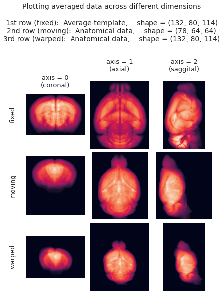
config = Config()
n_seeds = 20
seeds = [2**i for i in range(n_seeds)]
for key, anat in mice.T1w.items():
if key != mice.get_key(4, 2):
continue
subject, session, _ = mice.looper[key]
moving = anat.get_data()
moving = reorient_arr(moving)
moving = reset_ants_img(moving)
moving_imgs[key] = moving
_txs = []
_perf = []
for seed in tqdm(seeds):
tx = ants.registration(
fixed=fixed,
moving=moving,
mask=moving.get_mask(),
type_of_transform='SyN',
verbose=True,
random_seed=seed,
)
warped = ants.apply_transforms(
fixed=fixed,
moving=moving,
transformlist=tx['fwdtransforms'],
interpolator='linear',
)
mi = ants.image_mutual_information(fixed, warped)
mi_base = ants.image_mutual_information(fixed, fixed)
_txs.append(tx)
_perf.append(mi/mi_base)
best_tx = _txs[np.argmax(_perf)]
transforms[key] = best_tx
warped = ants.apply_transforms(
fixed=fixed,
moving=moving,
transformlist=best_tx['fwdtransforms'],
interpolator='linear',
)
warped_imgs[key] = warped
mi = ants.image_mutual_information(fixed, warped)
mi_base = ants.image_mutual_information(fixed, fixed)
print('{:s},\tbest rel mi: {:.3f}'.format(key, mi/mi_base))
sub-SLC04_ses-2, best rel mi: 0.471
key = mice.get_key(4, 2)
_ = plot_registration(
fixed=fixed,
moving=moving_imgs[key],
warped=warped_imgs[key],
)

Inv mask transforms#
masks_inv = {}
for key, best_tx in tqdm(transforms.items()):
inv = {}
inv['roi'] = {
lbl: ants.apply_transforms(
fixed=moving,
moving=reset_ants_img(mask),
transformlist=best_tx['invtransforms'],
interpolator='genericLabel', )
for lbl, mask in roi_masks.items()
}
_masks = [
parcellation['mask_l'],
parcellation['mask_r'],
allen['root_mask'],
allen['cerebrum_mask'],
allen['isocortex_mask'],
]
left_inv, right_inv, root_inv, cerebrum_inv, isocortex_inv = [
ants.apply_transforms(
fixed=moving,
moving=reset_ants_img(mask),
transformlist=best_tx['invtransforms'],
interpolator='genericLabel', )
for mask in _masks
]
inv['left'] = left_inv
inv['right'] = right_inv
inv['root'] = root_inv
inv['cerebrum'] = cerebrum_inv
inv['isocortex'] = isocortex_inv
masks_inv[key] = inv
atlas_inv = {}
for key, val in tqdm(masks_inv.items()):
atlas_kmeans_inv = np.zeros(moving.shape)
for lbl, mask_inv in val['roi'].items():
if str(allen['isocortex']['id']) not in lbl:
continue
region_id = int(lbl.split('-')[-1])
atlas_kmeans_inv[mask_inv.numpy().astype(bool)] = region_id
atlas_inv[key] = atlas_kmeans_inv
for key, atlas_kmeans_inv in atlas_inv.items():
_ = plot_parcellation(
parcellation=atlas_kmeans_inv,
mask_l=masks_inv[key]['left'].numpy().astype(bool),
mask_r=masks_inv[key]['right'].numpy().astype(bool),
root_mask=masks_inv[key]['root'].numpy().astype(bool),
figsize=(4, 3),
)
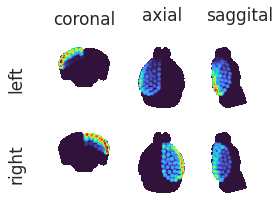
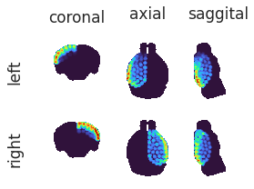
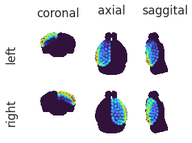
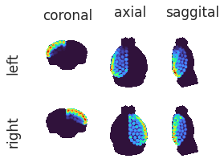
Load func#
config = Config()
include_intvl = range(config.exclude, config.run_duration)
normal = True
dict_list = []
for key, bold in tqdm(mice.bold.items()):
subject, session, run = mice.looper[key]
x = bold.get_data()
if bold.task != 'rest' or x is None:
continue
x = reorient_arr(x)
key_mask = mice.get_key(subject, session)
mask_CH = masks_inv[key_mask]['cerebrum'].numpy().astype(bool)
if normal:
mean = x[mask_CH, :].mean()
sd = x[mask_CH, :].std()
x = (x - mean) / sd
# put into df
for region_id, mask in masks_inv[key_mask]['roi'].items():
data_dict = {
'bold': x[mask.numpy().astype(bool), :].mean(0)[include_intvl], # TODO: how about median?
'timepoint': range(config.run_duration*(run-1) + config.exclude, config.run_duration*run),
'region_id': [region_id] * len(include_intvl),
'subject': [subject] * len(include_intvl),
'session': [session] * len(include_intvl),
'run': [run] * len(include_intvl),
'normal': [str(normal)] * len(include_intvl),
}
dict_list.append(data_dict)
df = pd.DataFrame(merge_dicts(dict_list))
---------------------------------------------------------------------------
IndexError Traceback (most recent call last)
<ipython-input-104-8e3a24fdd496> in <module>
17
18 if normal:
---> 19 mean = x[mask_CH, :].mean()
20 sd = x[mask_CH, :].std()
21 x = (x - mean) / sd
IndexError: boolean index did not match indexed array along dimension 1; dimension is 62 but corresponding boolean dimension is 64
x.shape
(78, 62, 64, 600)
mask_CH.shape
(78, 64, 64)
x.shape
(78, 62, 64, 600)
df = pd.DataFrame(merge_dicts(dict_list))
df.shape
(3187800, 7)
df.to_pickle("func_data.df")
df_table = {}
for key, (subject, session, run) in mice.looper.items():
selected_df = df.loc[
(df.subject == subject) &
(df.session == session) &
(df.run == run)
]
if len(selected_df):
df_table[key] = selected_df.pivot(index='timepoint', columns='region_id', values='bold')
node_labels = list(df_table.values())[0].columns.values.tolist()
node_labels = {i: lbl for i, lbl in enumerate(node_labels)}
pprint(list(df_table.keys()))
['sub-SLC01_ses-1_run-1',
'sub-SLC01_ses-1_run-3',
'sub-SLC01_ses-1_run-5',
'sub-SLC01_ses-1_run-7',
'sub-SLC01_ses-2_run-1',
'sub-SLC01_ses-2_run-3',
'sub-SLC01_ses-2_run-5',
'sub-SLC01_ses-2_run-7',
'sub-SLC01_ses-3_run-1',
'sub-SLC01_ses-3_run-3',
'sub-SLC01_ses-3_run-5',
'sub-SLC01_ses-3_run-7',
'sub-SLC02_ses-1_run-1',
'sub-SLC02_ses-1_run-3',
'sub-SLC02_ses-1_run-5',
'sub-SLC02_ses-1_run-7',
'sub-SLC02_ses-2_run-1',
'sub-SLC02_ses-2_run-3',
'sub-SLC02_ses-2_run-5',
'sub-SLC02_ses-3_run-1',
'sub-SLC02_ses-3_run-3',
'sub-SLC02_ses-3_run-5',
'sub-SLC02_ses-3_run-7',
'sub-SLC03_ses-1_run-2',
'sub-SLC03_ses-1_run-4',
'sub-SLC03_ses-1_run-6',
'sub-SLC03_ses-2_run-1',
'sub-SLC03_ses-2_run-3',
'sub-SLC03_ses-2_run-5',
'sub-SLC03_ses-2_run-7',
'sub-SLC03_ses-3_run-1',
'sub-SLC03_ses-3_run-3',
'sub-SLC03_ses-3_run-5',
'sub-SLC03_ses-3_run-7',
'sub-SLC04_ses-1_run-1',
'sub-SLC04_ses-1_run-3',
'sub-SLC04_ses-1_run-5',
'sub-SLC04_ses-1_run-7',
'sub-SLC04_ses-2_run-1',
'sub-SLC04_ses-2_run-3',
'sub-SLC04_ses-2_run-5',
'sub-SLC04_ses-2_run-7']
Combine aaaaallll data#
# df_list = [
# _df for key, _df in df_table.items()
# if mice.looper[key][0] in [6] and mice.looper[key][1] in [1]
# ]
df_combined = pd.concat(df_table.values())
df_combined.shape
(23100, 138)
import warnings
warnings.filterwarnings('ignore', category=DeprecationWarning)
percentiles = [30, 25, 20, 18, 15, 10]
corrs = get_corrs(df_combined, percentiles=percentiles, positive_only=False)
corrs.keys()
dict_keys(['percentiles', 'pearson_thresholds', 'spearman_thresholds', 'pearson', 'spearman', 'pearson_corr', 'spearman_corr'])
plt.imshow(corrs['pearson_corr'], cmap='nipy_spectral', vmin=0, vmax=1)
<matplotlib.image.AxesImage at 0x7f56fc022880>
plt.figure(figsize=(8, 6))
plt.imshow(corrs['pearson_corr'], cmap='bwr', vmin=-1, vmax=1)
<matplotlib.image.AxesImage at 0x7f011d1802b0>
node_labels
{0: '0-1089',
1: '0-315-1',
2: '0-315-10',
3: '0-315-11',
4: '0-315-12',
5: '0-315-13',
6: '0-315-14',
7: '0-315-15',
8: '0-315-16',
9: '0-315-17',
10: '0-315-18',
11: '0-315-19',
12: '0-315-2',
13: '0-315-20',
14: '0-315-21',
15: '0-315-22',
16: '0-315-23',
17: '0-315-24',
18: '0-315-25',
19: '0-315-26',
20: '0-315-27',
21: '0-315-28',
22: '0-315-29',
23: '0-315-3',
24: '0-315-30',
25: '0-315-31',
26: '0-315-32',
27: '0-315-33',
28: '0-315-34',
29: '0-315-35',
30: '0-315-36',
31: '0-315-37',
32: '0-315-38',
33: '0-315-39',
34: '0-315-4',
35: '0-315-40',
36: '0-315-41',
37: '0-315-42',
38: '0-315-43',
39: '0-315-44',
40: '0-315-45',
41: '0-315-46',
42: '0-315-47',
43: '0-315-48',
44: '0-315-49',
45: '0-315-5',
46: '0-315-50',
47: '0-315-51',
48: '0-315-52',
49: '0-315-53',
50: '0-315-54',
51: '0-315-55',
52: '0-315-56',
53: '0-315-57',
54: '0-315-58',
55: '0-315-59',
56: '0-315-6',
57: '0-315-60',
58: '0-315-61',
59: '0-315-62',
60: '0-315-63',
61: '0-315-64',
62: '0-315-7',
63: '0-315-8',
64: '0-315-9',
65: '0-477',
66: '0-698',
67: '0-703',
68: '0-803',
69: '1-1089',
70: '1-315-100',
71: '1-315-101',
72: '1-315-102',
73: '1-315-103',
74: '1-315-104',
75: '1-315-105',
76: '1-315-106',
77: '1-315-107',
78: '1-315-108',
79: '1-315-109',
80: '1-315-110',
81: '1-315-111',
82: '1-315-112',
83: '1-315-113',
84: '1-315-114',
85: '1-315-115',
86: '1-315-116',
87: '1-315-117',
88: '1-315-118',
89: '1-315-119',
90: '1-315-120',
91: '1-315-121',
92: '1-315-122',
93: '1-315-123',
94: '1-315-124',
95: '1-315-125',
96: '1-315-126',
97: '1-315-127',
98: '1-315-128',
99: '1-315-65',
100: '1-315-66',
101: '1-315-67',
102: '1-315-68',
103: '1-315-69',
104: '1-315-70',
105: '1-315-71',
106: '1-315-72',
107: '1-315-73',
108: '1-315-74',
109: '1-315-75',
110: '1-315-76',
111: '1-315-77',
112: '1-315-78',
113: '1-315-79',
114: '1-315-80',
115: '1-315-81',
116: '1-315-82',
117: '1-315-83',
118: '1-315-84',
119: '1-315-85',
120: '1-315-86',
121: '1-315-87',
122: '1-315-88',
123: '1-315-89',
124: '1-315-90',
125: '1-315-91',
126: '1-315-92',
127: '1-315-93',
128: '1-315-94',
129: '1-315-95',
130: '1-315-96',
131: '1-315-97',
132: '1-315-98',
133: '1-315-99',
134: '1-477',
135: '1-698',
136: '1-703',
137: '1-803'}
_ = plot_corrs(corrs['pearson'], corrs['spearman'])
_ = plot_corr_hist(
corr_list=[corrs['pearson_corr'], corrs['spearman_corr']],
labels=['pearson', 'spearman'],
colors=['C0', 'C3'],
positive_only=False,
figsize=(8, 5),
)
_ = plot_corr_hist(
corr_list=[corrs['pearson_corr'], corrs['spearman_corr']],
labels=['pearson', 'spearman'],
colors=['C0', 'C3'],
positive_only=True,
figsize=(8, 5),
)